🔥News
- 03 / 2024 HeadArtist is accepted to SIGGRAPH2024.
- 02 / 2024 CAD is accepted to CVPR2024.
- 09 / 2023 GOAE is accepted to ICCV2023.
- 07 / 2023 I am joining AntGroup as an intern.
- 03 / 2023 XFormer is accepted to IJCAI2023.
- 02 / 2023 CLCAE is accepted to CVPR2023.
- 01 / 2023 Human MotionFormer is accepted to ICLR2023.
- 09 / 2022 FFCLIP is accepted to NeurIPS2022 as spotlight.
- 09 / 2022 I am starting my PhD at HKUST.
📝 Selected Publications
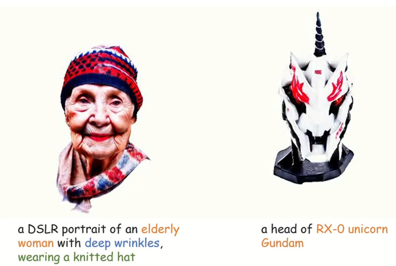
HeadArtist: Text-conditioned 3D Head Generation with Self Score Distillation
Hongyu LIU, Xuan Wang, Ziyu Wan, Yujun Shen, Yibing Song, Jing Liao,
Qifeng Chen
ACM Special Interest Group for Computer Graphics and Interactive Techniques (SIGGRAPH) 2024
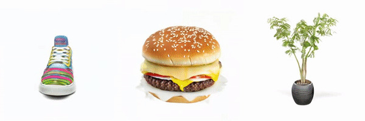
CAD: Photorealistic 3D Generation via Adversarial Distillation
Ziyu Wan, Despoina Paschalidou, Ian Huang, Hongyu Liu , Bokui Shen, Xiaoyu Xiang, Jing Liao, Leonidas Guibas
IEEE/CVF Conference on Computer Vision and Pattern Recognition (CVPR) 2024

Make Encoder Great Again in 3D GAN Inversion through Geometry and Occlusion-Aware Encoding.
Ziyang Yuan*, Yiming Zhu*, Yu Li, Hongyu Liu, Chun Yuan (* denotes equal contribution).
International Conference on Computer Vision (ICCV) 2023
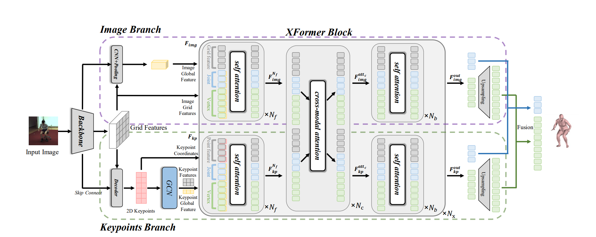
XFormer: Fast and Accurate Monocular 3D Body Capture.
Lihui Qian, Xintong Han, Faqiang Wang, Hongyu Liu, Huawei Wei, Zhe Lin, Haoye Dong, Zhiwen Li, Huawei Wei, Zhe Lin, Chengbin Jin.
International Joint Conference on Artificial Intelligence (IJCAI) 2023

Delving StyleGAN Inversion for Image Editing: A Foundation Latent Space Viewpoint
Hongyu Liu, Yibing Song, Qifeng Chen.
IEEE/CVF Conference on Computer Vision and Pattern Recognition (CVPR) 2023
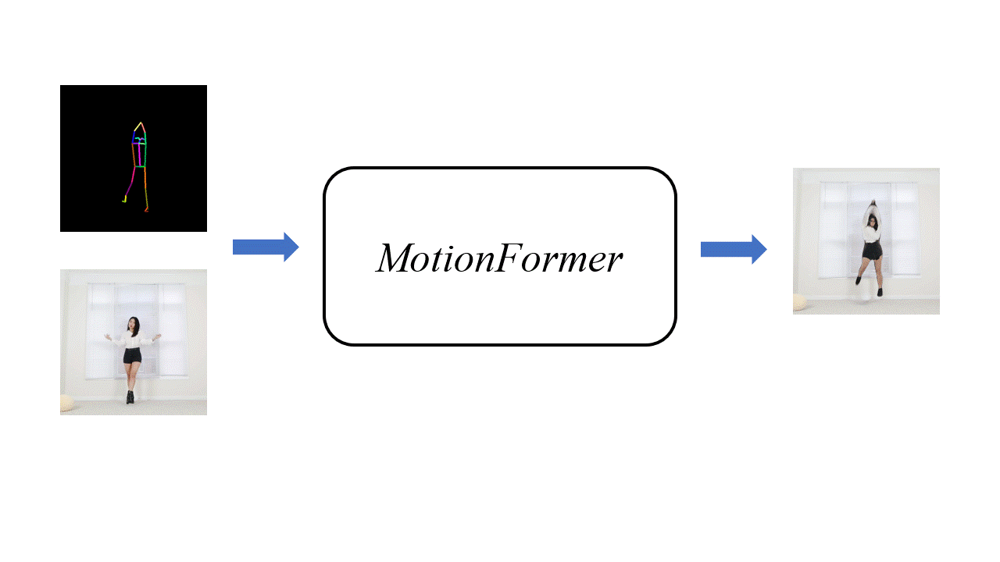
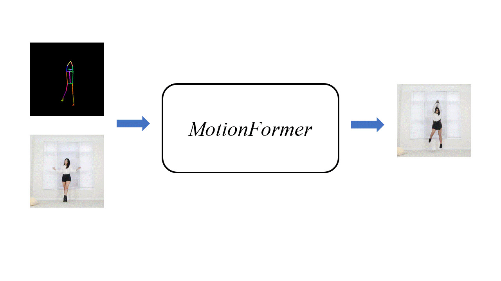
Human MotionFormer: Transferring Human Motions with Vision Transformers
Hongyu Liu, Xintong Han, Chenbin Jin, Lihui Qian, Huawei Wei, Zhe Lin, Faqiang Wang, Haoye Dong, Yibing Song, Jia Xu, Qifeng Chen.
International Conference on Learning Representations (ICLR) 2023

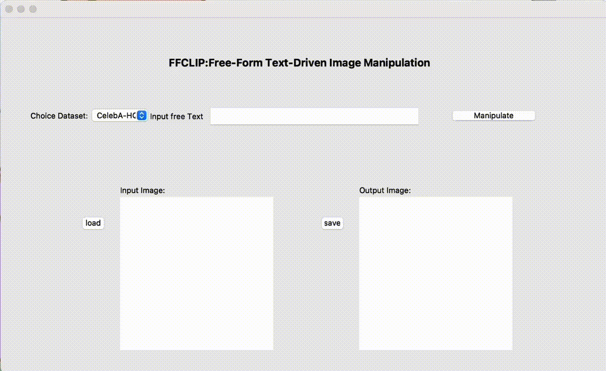
One Model to Edit Them All: Free-Form Text-Driven Image Manipulation with Semantic Modulations
Yiming Zhu*, Hongyu Liu*, Yibing Song, Xintong Han, Chun Yuan, Qifeng Chen, Jue Wang (* denotes equal contribution).
Neural Information Processing Systems (NeurIPS) 2022, Spotlight
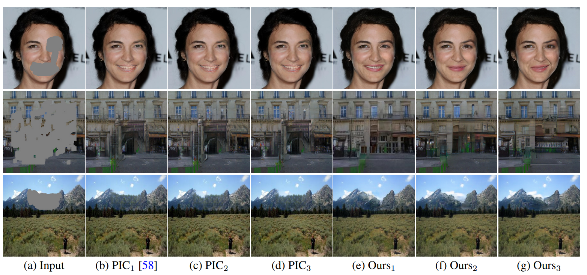
Pd-gan: Probabilistic diverse gan for image inpainting
Hongyu Liu, Ziyu Wan, Wei Huang, Yibing Song, Xintong Han, Jing Liao.
IEEE/CVF Conference on Computer Vision and Pattern Recognition (CVPR) 2021

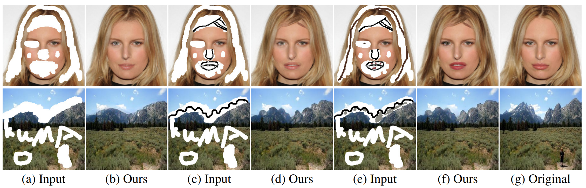
DeFLOCNet: Deep Image Editing via Flexible Low-level Controls
Hongyu Liu, Ziyu Wan, Wei Huang, Yibing Song, Xintong Han, Jing Liao, Bin Jiang, Wei Liu.
IEEE/CVF Conference on Computer Vision and Pattern Recognition (CVPR) 2021
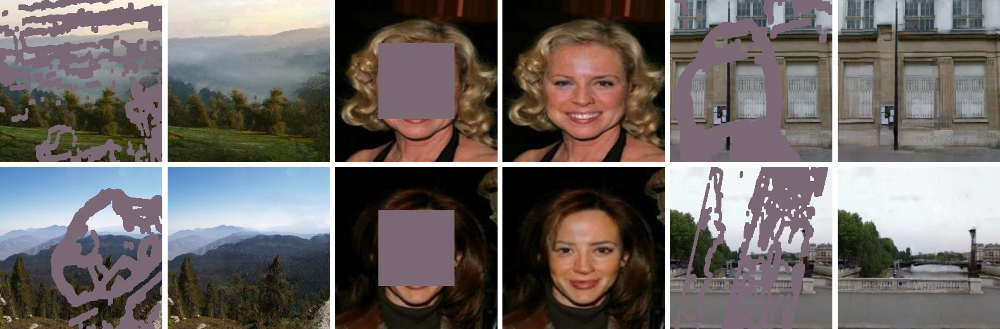
Rethinking image inpainting via a mutual encoder-decoder with feature equalizations
Hongyu Liu, Bing Jiang, Yibing Song, Wei Huang, Chao Yang.
European Conference on Computer Vision (ECCV) 2020, Oral
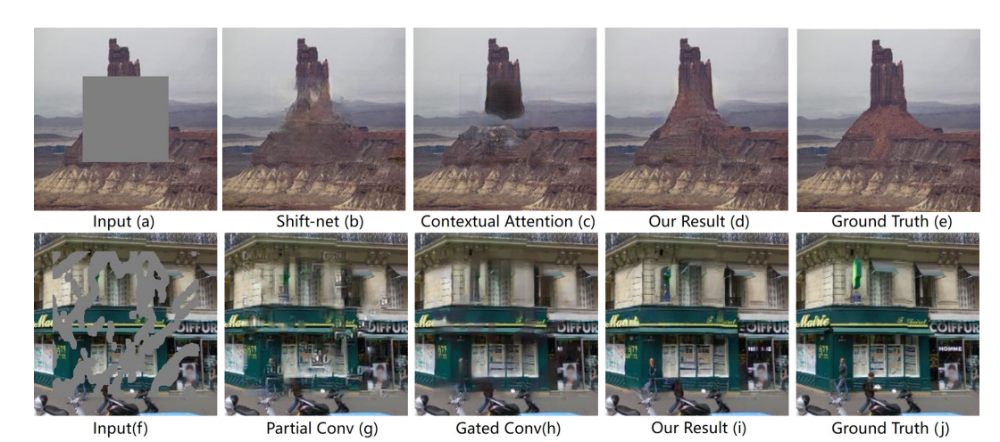
Coherent semantic attention for image inpainting
Hongyu Liu, Bin Jiang, Yi Xiao, Chao Yang
International Conference on Computer Vision (ICCV) 2019
🙈 Projects

Anime Talking Heads
Anime talking heads. Control anime avatar with your expression in real time. We also build SDK, which only occupy 9% I7 CPU's performance (No GPU!).
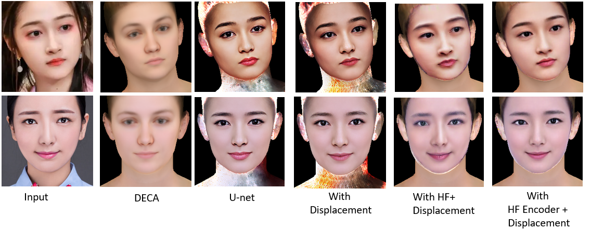
3D Face reconstruction
3D Face reconstruction. Refining the UV Texture of FLAME.
We use DECA as our code base.
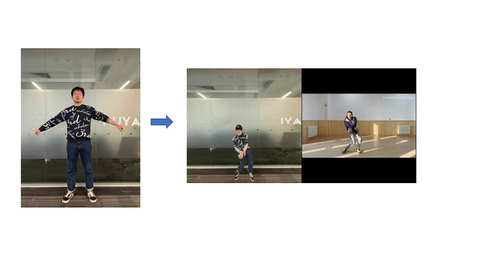
Consumer Digital Human
Consumer Digital Human. Given a single image(T pose), we can create an avatar and drive this avatar with target motion.
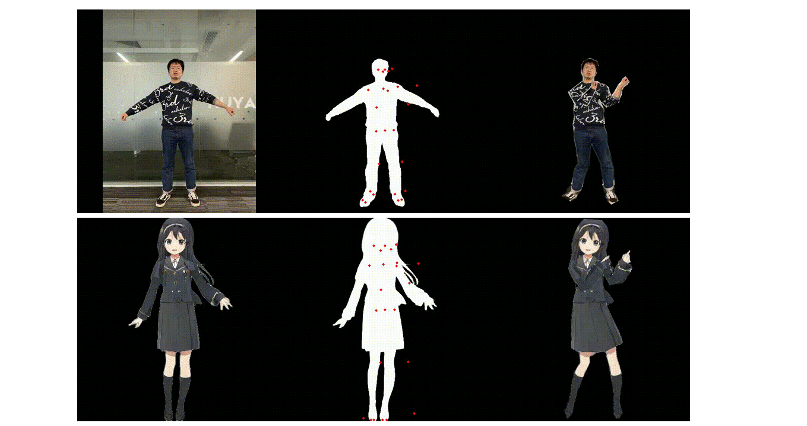
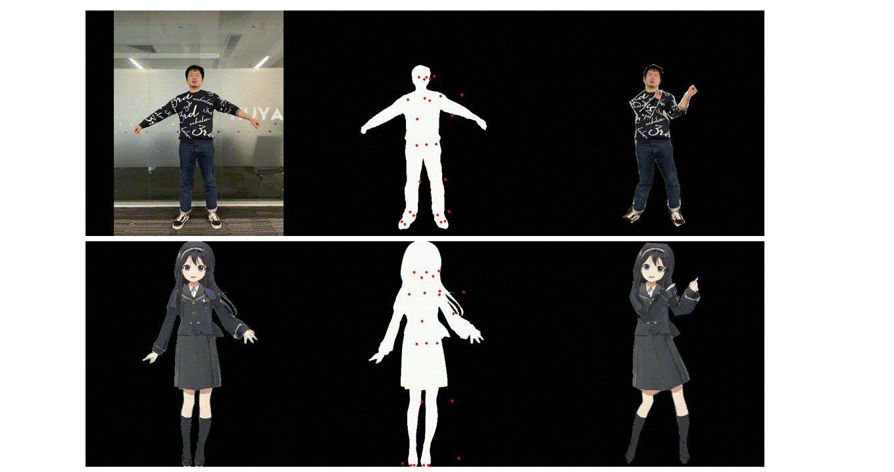